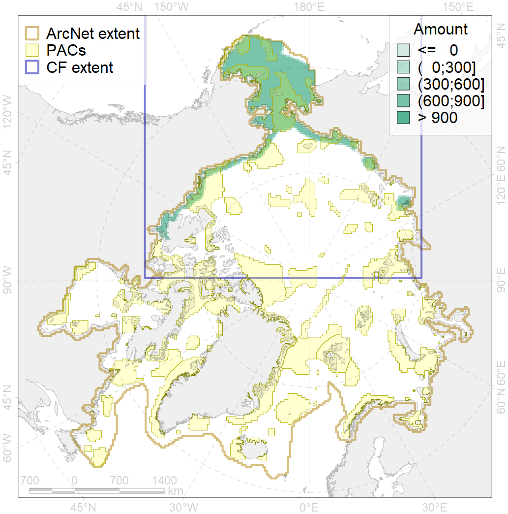
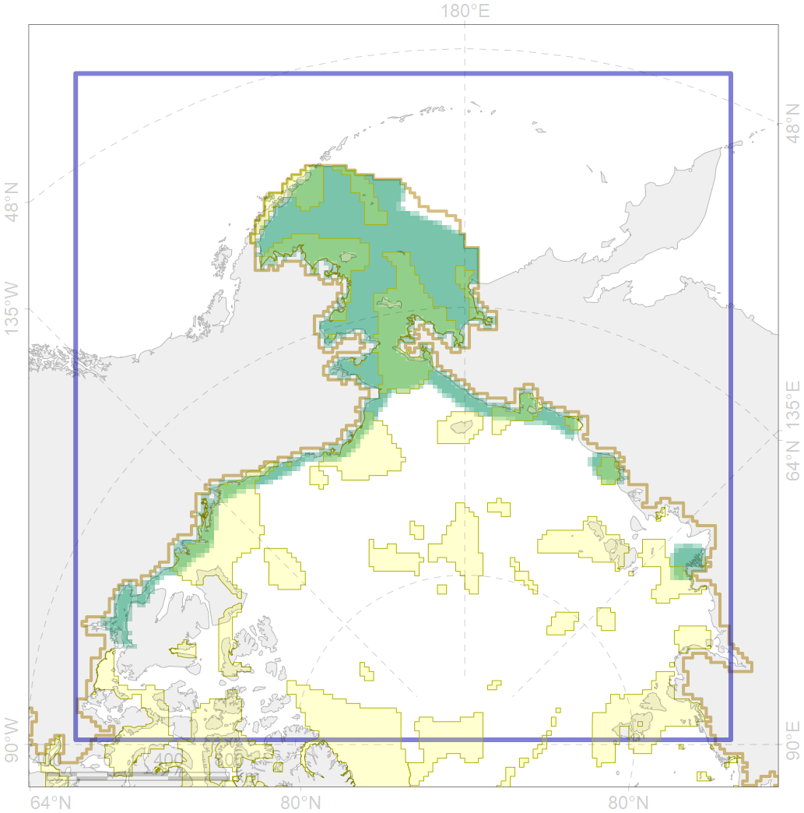

4004

| CF ID | 4004 |
| CF Name | Range of the Pacific Capelin (Mallotus villosus catervarius) |
| Time Period | 1930s-2010s |
| Source(s) | Chernova, 2011, 2015; Glebov et al., 2016 a,b; Mecklenburg et al., 2018 |
| Seasonality | January-December |
| Depth Horizon | Usually to 200 m |
| Methodology | Map based on publications produced after field studies |
| Author Name | Natalya Chernova |
| Notes | Chernova (2011) compiled the data of: Rumyantsev, 1946; Andriashev, 1954 Klyukanov, 1977; Sheiko, Fedorov, 2000; Chereshnev, 2008 |
| Conservation Target Set in the Scenario | 0.03 |
| Conservation Target Achieved in the Scenario | 0.411 (Scenario: 1369.1%) |
| PAC ID | Proportion in the PAC | Contribution to ArcNet Target Achievement | PAC’s Contribution to the Achieved Target |
|---|---|---|---|
| 1 | 2.9% | 89.5% | 6.5% |
| 2 | 3.2% | 88.2% | 6.4% |
| 3 | 8.1% | 246.9% | 18.0% |
| 4 | 1.7% | 46.5% | 3.4% |
| 5 | 16.6% | 508.3% | 37.1% |
| 6 | 0.1% | 2.7% | 0.2% |
| 7 | 0.0% | 0.0% | 0.0% |
| 8 | 1.7% | 48.1% | 3.5% |
| 9 | 0.4% | 8.3% | 0.6% |
| 10 | 1.2% | 32.6% | 2.4% |
| 12 | 0.5% | 14.8% | 1.1% |
| 60 | 1.6% | 37.9% | 2.8% |
| 61 | 0.1% | 2.0% | 0.1% |
| 62 | 3.7% | 111.5% | 8.1% |
| inner | 41.8% | 1237.4% | 90.4% |
| outer | 58.2% | 131.7% | 9.6% |